Published & Working Research Manuscripts
Interactive Effect of Obstruction & Partisan Majority on Senator Voteshares

Abstract: Are Senators cross-pressured by party influence and constituent demands on procedural votes? We present a theory positing that Senators are indeed cross-pressured between these two demands and that they anticipate an electoral cost for their procedural voting record. In an analysis of Senate procedural votes since the 92nd Congress, we find that procedural votes are salient to voters and important to party leaders. Using a new spatial measure of obstruction preference, we demonstrate our finding three ways. First, obstruction preferences have become more polarized as the Senate experiences more intense legislative obstruction. Second, electorally vulnerable members are most likely to break from their party on procedural votes. Third, we find that voters electorally reward majority party Senators that break from their party and behave like minority party obstructionists. Our findings suggest that, unlike the House, Senate procedural votes are largely indistinguishable from substantive votes and are electorally salient.
Effect of Incumbency on Vote Share by Seat Type & Polarization Level, 1920-2016

Abstract: Recent work finds that a decline in the incumbency advantage coincides with the rise of partisanship as a determinant of congressional electoral outcomes. While this work updates our view of congressional elections, it is unclear if this holds in the more candidate-centered and high-information electoral context of the U.S. Senate. In this paper, I address these two considerations by evaluating a theory positing that polarization conditions the influence of incumbency and partisanship as Senate election determinants. Using data on the entire direct-election Senate era and survey data, this paper finds that: (1) polarization provides a partisan advantage for candidates running in states in which they are members of the partisan majority and (2) polarization positively conditions the incumbency advantage for Senators representing states that favor the other party. These findings suggest that Senators may still successfully cultivate a personal brand in the face of growing ideological differences between the parties.
Distribution of 2016 Federal Election Candidate Positions

The Distorting Effects of Racial Animus on Proximity Voting in the 2016 Elections
with Isaac Hale, PhD Candidate, University of California, Davis
\(\star\)Manuscript Published in Electoral Studies (2019) \(\star\)Publication Link \(\star\)Manuscript Data Materials
\(\star\)Research featured in The New York Times (Feb. 27, 2019): The Deepening `Racialization’ of American Politics\(\star\)
Abstract: While the use of racial appeals by the 2016 Trump campaign is indisputable, researchers are actively debating their precise role in influencing voter behavior in the election. We seek to expand upon existing research which finds that racial animus electorally benefited the Trump campaign. We examine to what extent those benefits redounded to GOP candidates down-ballot and whether racial animus distorted ideological proximity voting in the 2016 election. We find that racial animus among voters helped Republicans at multiple ballot levels and that higher levels of racial animus distorted correct proximity voting among voters ideologically closest to the Democratic candidate. Our findings suggest that high salience campaign appeals on race at the presidential level can influence elections for the House and Senate. We also provide evidence that the process of racial partisan realignment is incomplete, as some white voters still vote incongruously with their ideology due to racial animus.
Abstract: While the use of racial appeals by the 2016 Trump campaign is indisputable, researchers are actively debating their precise role in influencing voter behavior in the election. We seek to expand upon existing research which finds that racial animus electorally benefited the Trump campaign. We examine to what extent those benefits redounded to GOP candidates down-ballot and whether racial animus distorted ideological proximity voting in the 2016 election. We find that racial animus among voters helped Republicans at multiple ballot levels and that higher levels of racial animus distorted correct proximity voting among voters ideologically closest to the Democratic candidate. Our findings suggest that high salience campaign appeals on race at the presidential level can influence elections for the House and Senate. We also provide evidence that the process of racial partisan realignment is incomplete, as some white voters still vote incongruously with their ideology due to racial animus.
Average Country & Website World Wide Web Information Networks, 9/1/2015 - 1/30/2017
 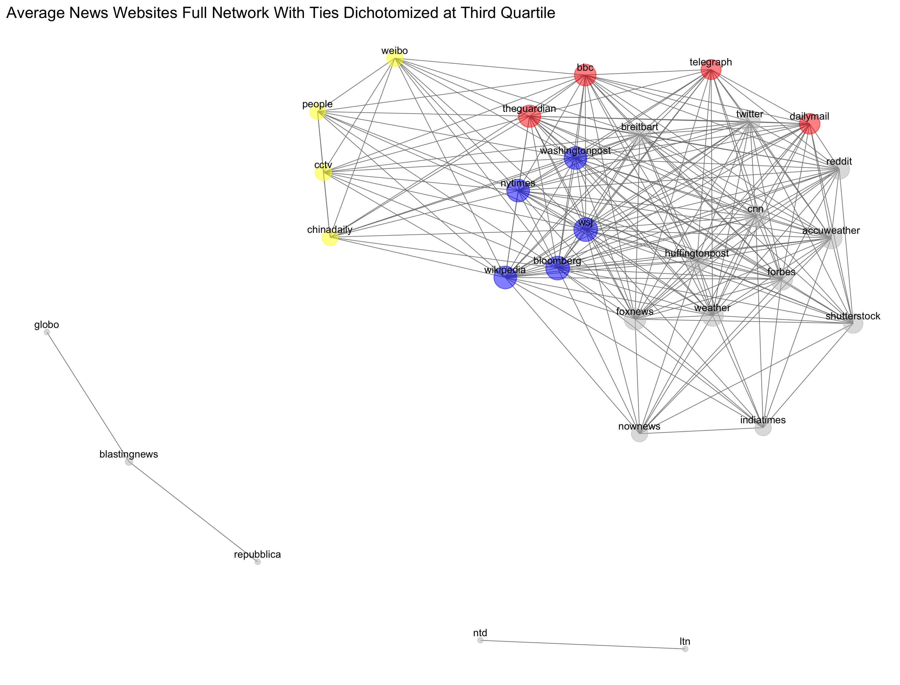
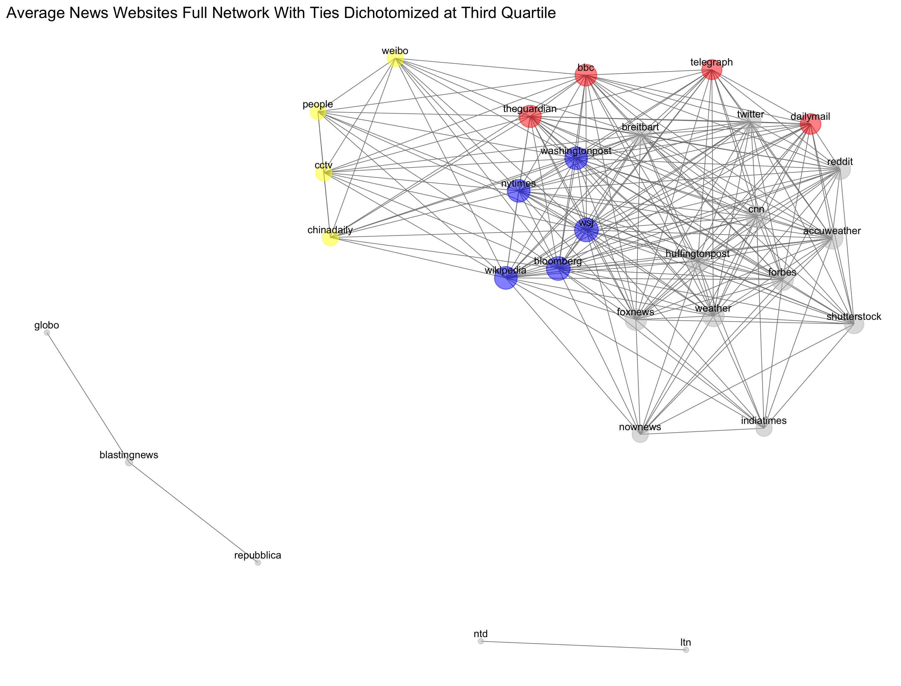
Diachronic Equivalence: An Examination of the International News Network
with George Barnett, Distinguished Professor of Communications, University of California, Davis
\(\star\)Manuscript Published in Social Network Analysis & Mining (2019) \(\star\)Publication Link \(\star\)Manuscript Data Materials
Abstract: Barabási (2014) argues that a significant proportion of nodes can be randomly removed from any scale-free network without it breaking apart. Gao, Barzel and Barabási (2016) suggest that three additional properties of networks, density, heterogeneity and symmetry, facilitate their ability to adjust their activities to retain functionality in times of stress. Barnett and Jiang (2016) examined the World Wide Web and found that while there are changes in the use of individual websites in this scale-free network due to weekly cycles in viewing specific websites, extreme events as well as other social and cultural events, the overall network is remarkably stable. This paper suggests an additional property, the structural equivalence of nodes that facilitates network stability. Further, it differentiates between two forms of equivalence, synchronous or structural equivalence, and diachronic equivalence, which indicates that two nodes’ position in a network change over time in a similar manner. A subset of the World Wide Web, the international news network is examined to demonstrate these notions. Daily data on the use of the world’s 44 most frequently visited news websites by 118 countries were mined over the 17 month period September 1, 2015 to January 30, 2017, to create a longitudinal two-mode network (countries and websites). The results suggest that individual structurally and diachronic equivalent nodes may be removed from both the international and website networks without impacting how the network changes over time.
The Influence of Partisan Polarization and Geographic Neighborhood Context on Congressional Cosponsorship Policy Networks
with Ross Butters, PhD Candidate, University of California, Davis
\(\star\)Manuscript Prepared for 2018 PolNet Annual Meeting Panel \(\star\)Working Manuscript Draft \(\star\)Manuscript Data Materials
Abstract: The classical “Textbook Theory” of Congress posits that legislators are relatively autonomous actors who work together on a bipartisan basis to maximize their probability of re-election (Shepsle 1989). This classical district-centered theory of Congress posits that legislators are motivated to engage in bipartisan legislative behavior and work together by the geographical similarity of their respective districts. Congressional scholars have largely cast doubt on the importance of district-centered considerations to inform the behavior of legislators, shifting the focus to partisan-centered preferences (Rohde 1991, Cox & McCubbins 1993, 2005). Moreover, while scholars have debated these theories, they have said relatively little about the salience of these theories across varying policy issues. Using the distinct expression of legislative behavior provide by bill co-sponsorship and geographic proximity methods we explore the extent to which district similarity influences how legislators work together in the Congressional network across varying degrees of partisan polarization. Treating Congress as a series of distinct policy networks and using exponential random graph models (ERGM), we evaluate a theory arguing that geographic proximity is a salient predictor of legislator cooperation in district-centered policy domains (i.e. agriculture, land management), even during the hyper-partisan contemporary Congress.
Who Goes Public with Whom? A Network Analysis of U.S. Senate Press Events
\(\star\)Working Manuscript in Preperation \(\star\)Working Manuscript Draft \(\star\)Manuscript Data Materials
Abstract: This paper explores the extent to which shared legislator characteristics–in particular, partisanship, representing the same constituency, and sitting on one or more of the same committees–influence legislators’ decisions to collaborate with their colleagues on a given issue. To do so, we employ network analysis. Previous studies that have done this have largely focused on bill co-sponsorship and roll-call voting. We argue that such measures, while informative, do not sufficiently capture the high-profile strategic choices that legislators make, and so instead employ a little-used comprehensive dataset that documents all U.S. Senate press events held between 1979 and 1999, as well as between 2003 and 2009, including all of the particular senators who attended each event. When we look at senator dyads, we find that shared party is the strongest predictor of whether two senators choose to appear at the same event and this effect increases over the time series. As to whether shared constituency and committee membership predicts public collaboration, the evidence is more mixed, with the strength of these institutional variables attenuating over time. Overall, our results mirror the increased levels of partisanship of the contemporary Senate that scholars have arrived at using other measures and demonstrate that such partisanship has largely erased the importance of institutional variables such as shared constituency and shared committee membership.
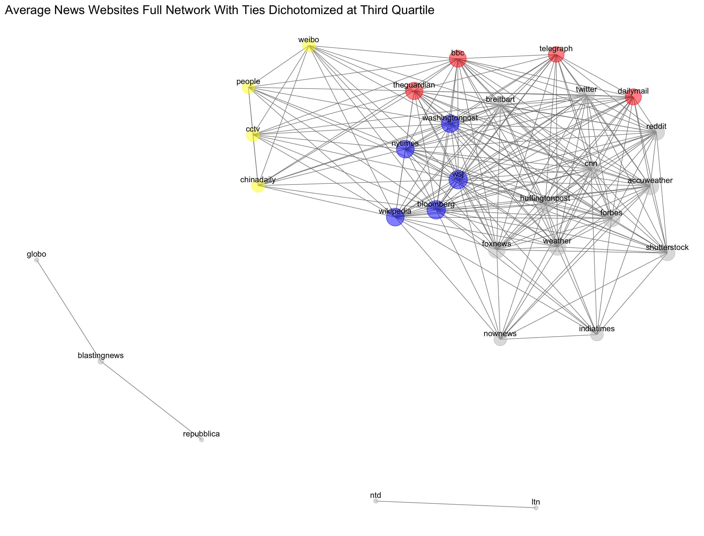
Abstract: Barabási (2014) argues that a significant proportion of nodes can be randomly removed from any scale-free network without it breaking apart. Gao, Barzel and Barabási (2016) suggest that three additional properties of networks, density, heterogeneity and symmetry, facilitate their ability to adjust their activities to retain functionality in times of stress. Barnett and Jiang (2016) examined the World Wide Web and found that while there are changes in the use of individual websites in this scale-free network due to weekly cycles in viewing specific websites, extreme events as well as other social and cultural events, the overall network is remarkably stable. This paper suggests an additional property, the structural equivalence of nodes that facilitates network stability. Further, it differentiates between two forms of equivalence, synchronous or structural equivalence, and diachronic equivalence, which indicates that two nodes’ position in a network change over time in a similar manner. A subset of the World Wide Web, the international news network is examined to demonstrate these notions. Daily data on the use of the world’s 44 most frequently visited news websites by 118 countries were mined over the 17 month period September 1, 2015 to January 30, 2017, to create a longitudinal two-mode network (countries and websites). The results suggest that individual structurally and diachronic equivalent nodes may be removed from both the international and website networks without impacting how the network changes over time.
Geographic Neighborhood profile for IA-2, 114th Congress & Particularistic Policy Bill Cosponsorship Network, 93rd U.S. Senate
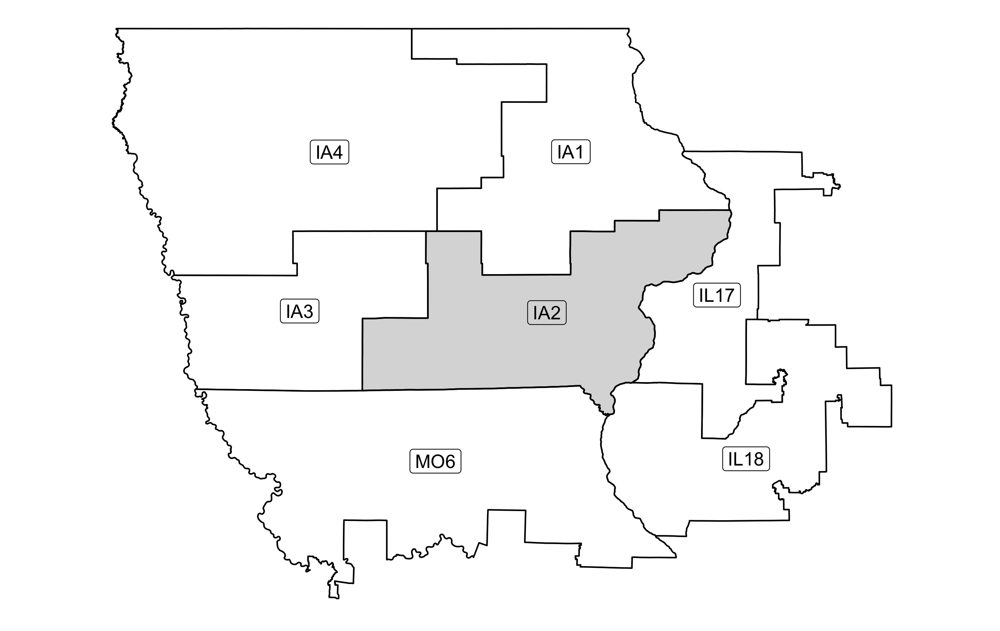 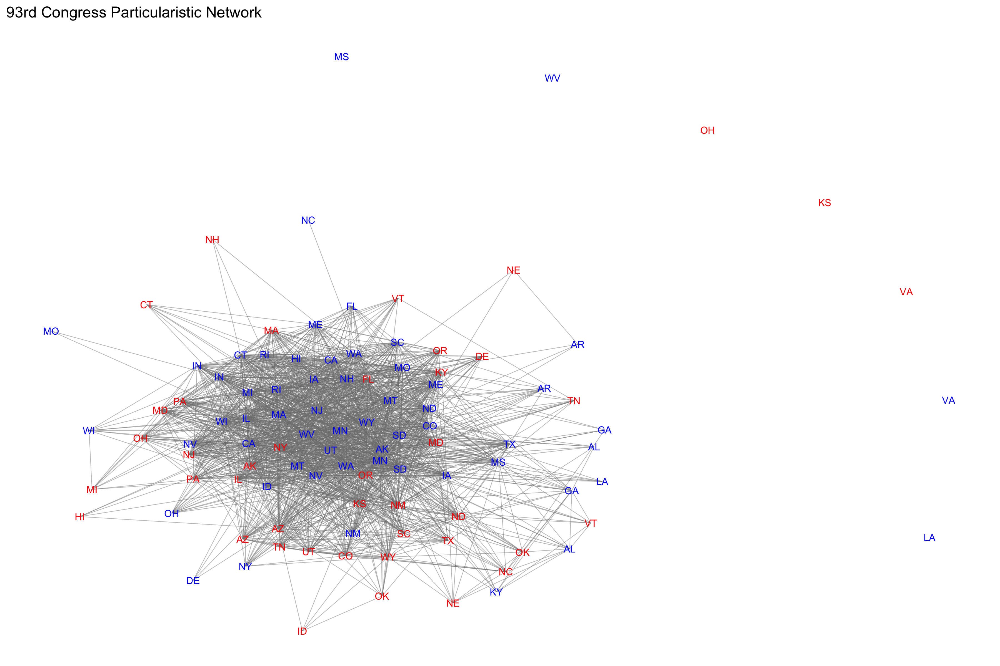
Abstract: The classical “Textbook Theory” of Congress posits that legislators are relatively autonomous actors who work together on a bipartisan basis to maximize their probability of re-election (Shepsle 1989). This classical district-centered theory of Congress posits that legislators are motivated to engage in bipartisan legislative behavior and work together by the geographical similarity of their respective districts. Congressional scholars have largely cast doubt on the importance of district-centered considerations to inform the behavior of legislators, shifting the focus to partisan-centered preferences (Rohde 1991, Cox & McCubbins 1993, 2005). Moreover, while scholars have debated these theories, they have said relatively little about the salience of these theories across varying policy issues. Using the distinct expression of legislative behavior provide by bill co-sponsorship and geographic proximity methods we explore the extent to which district similarity influences how legislators work together in the Congressional network across varying degrees of partisan polarization. Treating Congress as a series of distinct policy networks and using exponential random graph models (ERGM), we evaluate a theory arguing that geographic proximity is a salient predictor of legislator cooperation in district-centered policy domains (i.e. agriculture, land management), even during the hyper-partisan contemporary Congress.
Partisanship of Senate Press Event Participation & Effect of Party on Strategic Legislative Collaboration
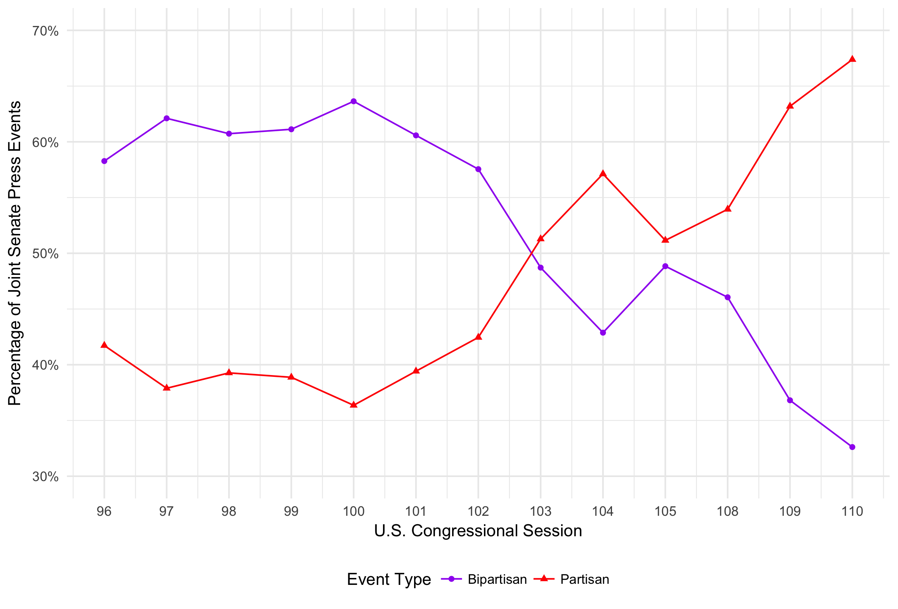 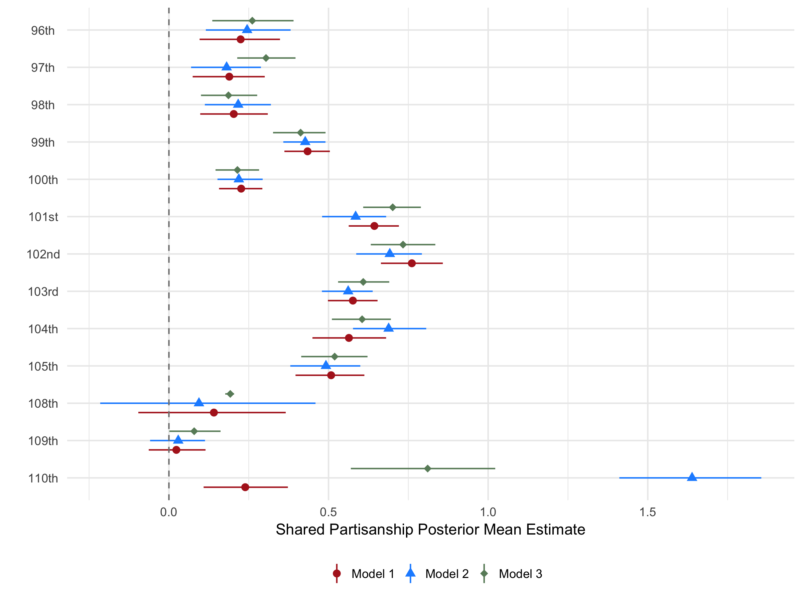
Abstract: This paper explores the extent to which shared legislator characteristics–in particular, partisanship, representing the same constituency, and sitting on one or more of the same committees–influence legislators’ decisions to collaborate with their colleagues on a given issue. To do so, we employ network analysis. Previous studies that have done this have largely focused on bill co-sponsorship and roll-call voting. We argue that such measures, while informative, do not sufficiently capture the high-profile strategic choices that legislators make, and so instead employ a little-used comprehensive dataset that documents all U.S. Senate press events held between 1979 and 1999, as well as between 2003 and 2009, including all of the particular senators who attended each event. When we look at senator dyads, we find that shared party is the strongest predictor of whether two senators choose to appear at the same event and this effect increases over the time series. As to whether shared constituency and committee membership predicts public collaboration, the evidence is more mixed, with the strength of these institutional variables attenuating over time. Overall, our results mirror the increased levels of partisanship of the contemporary Senate that scholars have arrived at using other measures and demonstrate that such partisanship has largely erased the importance of institutional variables such as shared constituency and shared committee membership.
Distribution of Ideological Divergence between District & Partisan Medians

Legislative Signaling or Random Error? An Analysis of Spatially Incorrect Voting in Congress
with Joe Zamadics, PhD Candidate, University of Colorado, Boulder
\(\star\)Working Manuscript in Preparation \(\star\)Working Manuscript Draft \(\star\)Manuscript Data Materials
Abstract: Theoretical and empirical models of congressional voting assumes that legislators vote with the sole purpose to move policy closer to their ideologically ideal point, with the most prominent being the NOMINATE model. While NOMINATE correctly classifies the vast majority of votes cast by members of Congress, a significant number of votes are misclassified and coded as spatial error. The literature on congressional voting assumes this error to be random and idiosyncratic across members. We dispute this conventional notion and argue that spatial error in congressional is not random, but rather systematic across members. We present a theory positing that spatial error is more likely on roll-call votes tackling salient policy issues and among members representing districts with greater ideological divergence between the median voter and the member’s primary election constituency. Using Aldrich-McKelvey scaling to place legislators and constituencies in the same ideological common space, we find support for our theory. We attribute this finding to the greater electoral uncertainty faced by ideological moderates and members representing districts with greater ideological divergence between key constituencies. Our findings have implications for the NOMINATE model, the nature of spatial error in legislative voting, and the electoral cross-pressures faced by legislators.
Abstract: Theoretical and empirical models of congressional voting assumes that legislators vote with the sole purpose to move policy closer to their ideologically ideal point, with the most prominent being the NOMINATE model. While NOMINATE correctly classifies the vast majority of votes cast by members of Congress, a significant number of votes are misclassified and coded as spatial error. The literature on congressional voting assumes this error to be random and idiosyncratic across members. We dispute this conventional notion and argue that spatial error in congressional is not random, but rather systematic across members. We present a theory positing that spatial error is more likely on roll-call votes tackling salient policy issues and among members representing districts with greater ideological divergence between the median voter and the member’s primary election constituency. Using Aldrich-McKelvey scaling to place legislators and constituencies in the same ideological common space, we find support for our theory. We attribute this finding to the greater electoral uncertainty faced by ideological moderates and members representing districts with greater ideological divergence between key constituencies. Our findings have implications for the NOMINATE model, the nature of spatial error in legislative voting, and the electoral cross-pressures faced by legislators.
Quarterly Generic Ballot Differential between the Majority & Minority Party, 1962-2016
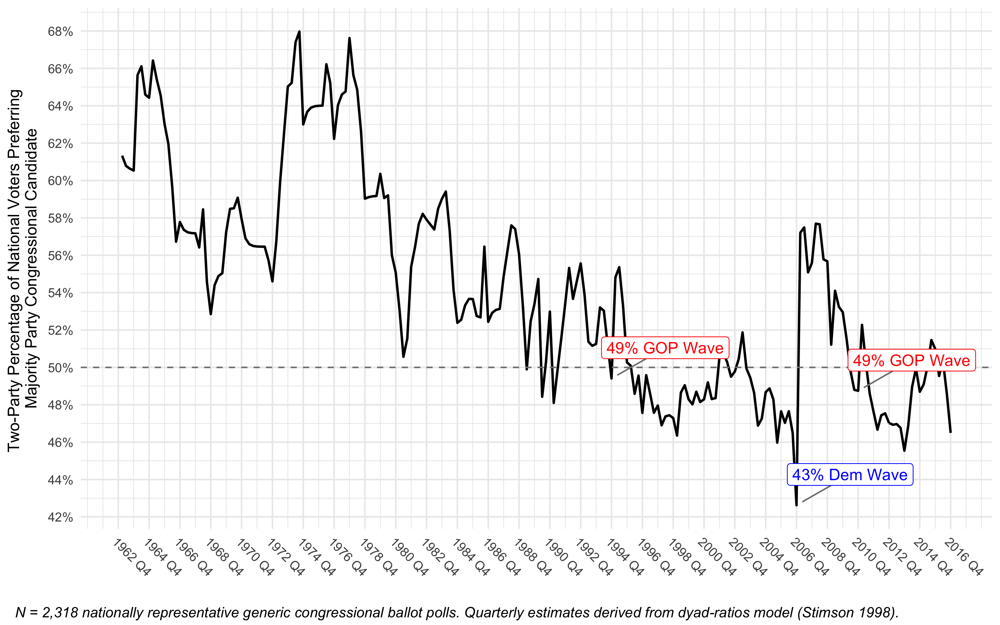
The Influence of Partisan Conflict & Policy Responsiveness on Majority Party Electoral Fortunes & Congressional Job Performance: A Time-Series Approach
with Tzu-Ping Liu, PhD Candidate, University of California, Davis
\(\star\)Working Manuscript in Preparation \(\star\)Working Manuscript Draft \(\star\)Manuscript Data Materials
Abstract: Recent work suggests that the aggregate approval rating of the U.S. Congress is a function of both policy responsiveness by the institution and the level of partisan conflict between both parties. However, standing models of the role of partisan conflict and policy responsiveness in congressional approval focus on Congress as a collective institution, rather than distinguishing between the legislative parties. In this paper, we specify a model which posits that policy responsiveness and partisan conflict not only influence approval of Congress as a whole, but also have differing effects on the electoral standing of the majority party in their relative generic ballot advantage to the minority party. We argue that partisan conflict decreases the generic congressional ballot advantage for the majority party and the approval rating of Congress as a collective institution. We also argue that policy responsiveness by Congress to the national mood raises the electoral standing of the majority party and the collective approval of Congress. Using a unique dataset of quarterly congressional approval and congressional generic ballot differentials from 1969 to 2016, we provide a comprehensive test of our model during varying periods of congressional polarization.
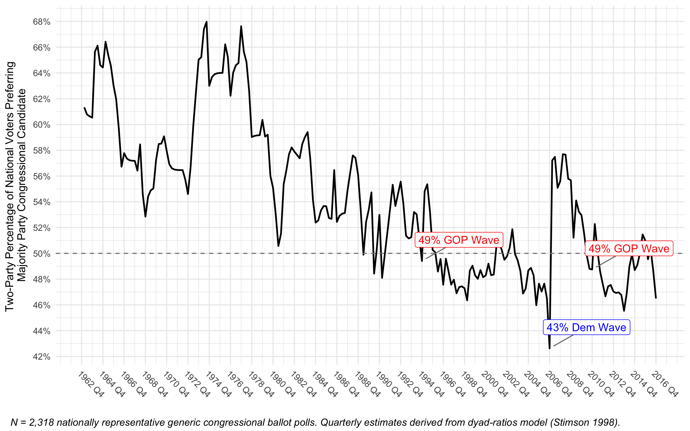
Abstract: Recent work suggests that the aggregate approval rating of the U.S. Congress is a function of both policy responsiveness by the institution and the level of partisan conflict between both parties. However, standing models of the role of partisan conflict and policy responsiveness in congressional approval focus on Congress as a collective institution, rather than distinguishing between the legislative parties. In this paper, we specify a model which posits that policy responsiveness and partisan conflict not only influence approval of Congress as a whole, but also have differing effects on the electoral standing of the majority party in their relative generic ballot advantage to the minority party. We argue that partisan conflict decreases the generic congressional ballot advantage for the majority party and the approval rating of Congress as a collective institution. We also argue that policy responsiveness by Congress to the national mood raises the electoral standing of the majority party and the collective approval of Congress. Using a unique dataset of quarterly congressional approval and congressional generic ballot differentials from 1969 to 2016, we provide a comprehensive test of our model during varying periods of congressional polarization.
Percentage of Senators Representing States That Lean Towards
the Opposing Party During the Direct-Election Era, 1914-2016
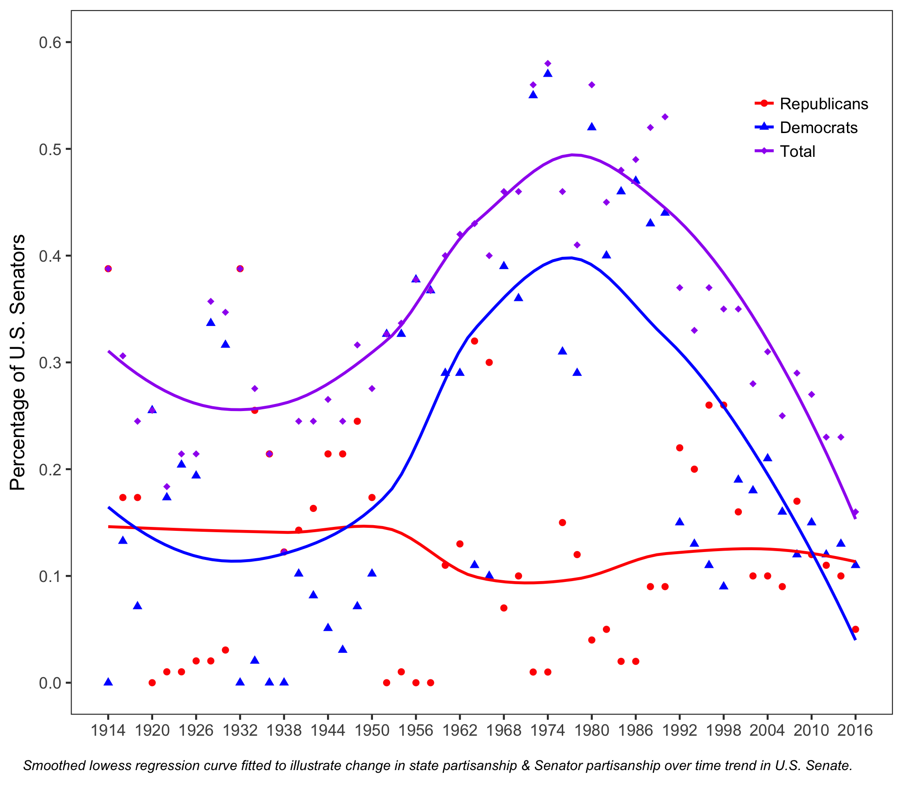
The Influence of Incumbency, Partisanship, Candidate Quality & National Tides in U.S. Senate Elections, 1914-2016
\(\star\)Working Manuscript in Preparation \(\star\)Working Manuscript Draft \(\star\)Manuscript Data Materials
Abstract: Relative to elections for the U.S. House, little is known about what influences outcomes for the U.S. Senate. While standing models of congressional election outcomes have been applied to the Senate, many of these models fail to account for salient variables, such as candidate quality, or focus their analysis on elections during the candidate-centered era. In this paper, I specify a comprehensive model of Senate election outcomes which focuses on four salient predictors of electoral outcomes: national partisan tides, incumbency, state partisanship, and candidate quality. I then evaluate this model using a novel dataset containing every Senate race since the adoption of the 17th amendment in 1913. Congruent with recent findings in the U.S. House, the model finds evidence that Senate elections are becoming more partisan-centered at the expense of a candidate quality advantage. On the other hand, and contrary to recent studies, the model finds evidence of an incumbency advantage increase in contemporary Senate elections. However, this increase in the incumbency advantage corresponds to a decline in the pivotal role of incumbency in determining Senate election outcomes during a more partisan-centered period of elections. I conclude by showing that Senate elections are becoming more nationalized and president-centered contests.
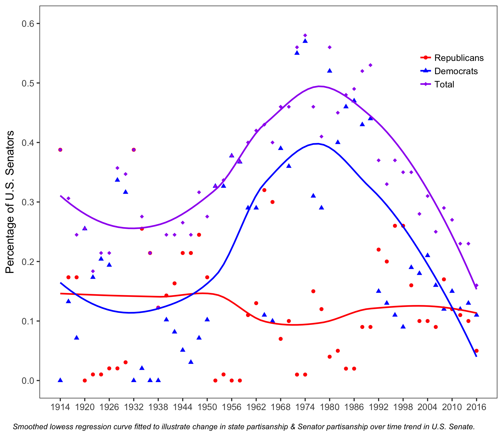
Abstract: Relative to elections for the U.S. House, little is known about what influences outcomes for the U.S. Senate. While standing models of congressional election outcomes have been applied to the Senate, many of these models fail to account for salient variables, such as candidate quality, or focus their analysis on elections during the candidate-centered era. In this paper, I specify a comprehensive model of Senate election outcomes which focuses on four salient predictors of electoral outcomes: national partisan tides, incumbency, state partisanship, and candidate quality. I then evaluate this model using a novel dataset containing every Senate race since the adoption of the 17th amendment in 1913. Congruent with recent findings in the U.S. House, the model finds evidence that Senate elections are becoming more partisan-centered at the expense of a candidate quality advantage. On the other hand, and contrary to recent studies, the model finds evidence of an incumbency advantage increase in contemporary Senate elections. However, this increase in the incumbency advantage corresponds to a decline in the pivotal role of incumbency in determining Senate election outcomes during a more partisan-centered period of elections. I conclude by showing that Senate elections are becoming more nationalized and president-centered contests.
Distribution of Indicators of Pro-Lobby Support, 114th Congress

The U.S. Congress and the Israeli Lobby: An Analysis of the Determinants of Congressional Support for Iranian Sanctions
with Evan Sandlin, PhD Candidate, University of California, Davis
\(\star\)Working Manuscript in Preparation \(\star\)Working Manuscript Draft \(\star\)Manuscript Data Materials
Abstract: Since the late 1960’s the US has maintained a relationship with Israel that is largely unprecedented in the history of US foreign policy. The United States Senate plays a role in maintaining this relationship and plays an essential constitutional role in foreign policymaking generally. Previous work on the determinants of congressional support of foreign policy initiatives focuses on the electoral connection, emphasizing a role for constituent-based variables when determining a Senator’s foreign policy votes. However this limited scholarship fails to account for a legislator’s perception of the national interest and how this influences their foreign policy positions. Additionally, Mearsheimer and Walt (2007) note that the “Israel Lobby” sways US foreign policy but the extent of this influence on congress is unclear. Using the salient case of U.S. sanctions against Iran, this paper explores the role of constituent-level and elite level variables in determining an individual Senator’s acquiescence to the ``pro-Israel’’ position. These findings have implications for causes of the continued strength of the US-Israel relationship as well as implications for the determinants of congressional foreign policy positions more broadly.
Abstract: Since the late 1960’s the US has maintained a relationship with Israel that is largely unprecedented in the history of US foreign policy. The United States Senate plays a role in maintaining this relationship and plays an essential constitutional role in foreign policymaking generally. Previous work on the determinants of congressional support of foreign policy initiatives focuses on the electoral connection, emphasizing a role for constituent-based variables when determining a Senator’s foreign policy votes. However this limited scholarship fails to account for a legislator’s perception of the national interest and how this influences their foreign policy positions. Additionally, Mearsheimer and Walt (2007) note that the “Israel Lobby” sways US foreign policy but the extent of this influence on congress is unclear. Using the salient case of U.S. sanctions against Iran, this paper explores the role of constituent-level and elite level variables in determining an individual Senator’s acquiescence to the ``pro-Israel’’ position. These findings have implications for causes of the continued strength of the US-Israel relationship as well as implications for the determinants of congressional foreign policy positions more broadly.
Copyright © 2017 by Carlos Algara. Made with RStudio.